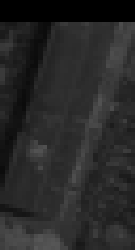
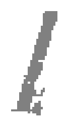
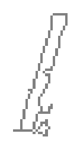
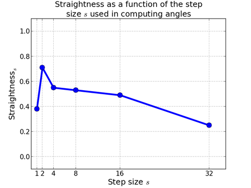
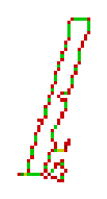
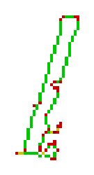
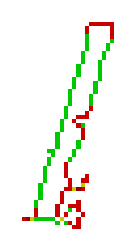
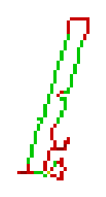
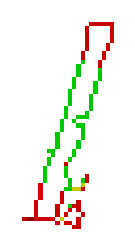
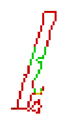

<table border="0" cellpadding="5">
<tr><th>Panchromatic</th><th>Segment</th><th>Boundary of segment</th></tr><tr><td width="10" valign="center"><a href="original-close79.png"></a></td><td valign="center"><a href="segment79.png"></a></td><td><a href="boundary79.png"></a></td></tr></table>
<br><br>
<a href="straightness-graph79.png"></a><br><br>
<table border="1" cellpadding="10">
<tr><th>Step size</th><th>Straightness</th><th>Straight Pixels (green means a boundary pixel is straight, red means it is not straight)</th></tr>
<tr><td><font size="6">1</font></td><td><font size="6">0.38</font></td><td width="10" valign="center"><a href="straightness-step1-79.png"></a></td></tr><tr><td><font size="6">2</font></td><td><font size="6">0.71</font></td><td width="10" valign="center"><a href="straightness-step2-79.png"></a></td></tr><tr><td><font size="6">4</font></td><td><font size="6">0.55</font></td><td width="10" valign="center"><a href="straightness-step4-79.png"></a></td></tr><tr><td><font size="6">8</font></td><td><font size="6">0.53</font></td><td width="10" valign="center"><a href="straightness-step8-79.png"></a></td></tr><tr><td><font size="6">16</font></td><td><font size="6">0.49</font></td><td width="10" valign="center"><a href="straightness-step16-79.png"></a></td></tr><tr><td><font size="6">32</font></td><td><font size="6">0.25</font></td><td width="10" valign="center"><a href="straightness-step32-79.png"></a></td></tr></table><br><br>
